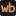

Sobald die erste Sicherung gelaufen ist, steht hier ihr Verlauf.
Sicherung abgeschlossen, 1.740 Dateien.
Ziel nicht erreichbar, nichts gesichert.
| Wert | Zahl | Herkunft |
|---|---|---|
| Richtlinien gesetzt | 52 / 52 | gemessen |
| Dateien | 1.740 | gemessen |
| Beispiel Leistungsaufnahme | ~ 85 W | geschätzt |
Sicherung der Nacht gesichert, Kanal 6 gesättigt
Ergebnis: 52 von 52 wie Soll, Sicherung überfällig, Sicherung gesichert.
Einordnung: gemessen 08.10.2026, läuft, offen.
